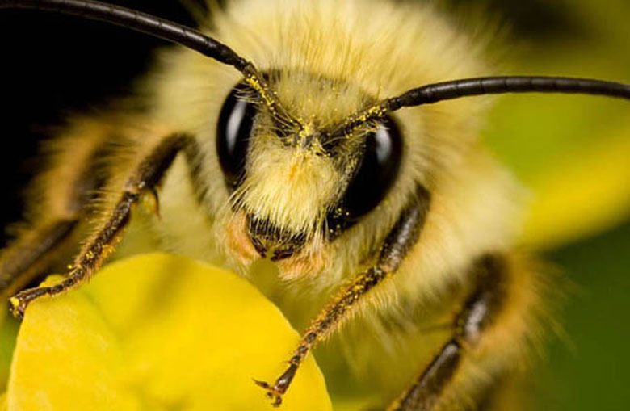

заголовок текста

Необычно холодная весна нынешнего года была неблагоприятной для пчел, даже, можно сказать, опасной. Весной колонии пчел, чтобы вырастить полноценное, работоспособное потомство, нужно много пыльцы и меда. К сожалению, холодная погода стояла в апреле, заморозки испортили и начало мая. А значит, все это неизбежно скажется и на ценах. «МК-Эстония» разбиралась в проблемах местных пчеловодов.
Пчеловодство Эстонии переживает непростые времена. Холодная, капризная весна вынуждает пчеловодов внимательно следить за пасекой, ведь пчелы сейчас нуждаются в особой заботе. Обычно пчелы вылетают из ульев уже в начале марта в первые же солнечные дни.
Но весенние месяцы текущего года оказались не только холодными, но и скупыми на пыльцу – даже мать-и-мачеха и одуванчики запоздали с цветением более чем на три недели. Из-за холода пчелы очень редко покидали ульи, чтобы собрать пыльцу и нектар с раннецветущих растений. Истощение запасов пищи грозит голодной смертью колониям пчел. По данным Эстонского союза пчеловодов, немалая часть пчелиных семей нашей страны уже погибла из-за голода.
заголовок текста
Чтобы пчелы смогли пережить такую холодную весну, хозяева готовят им прикорм из меда, цветочной пыльцы, воды, сахарной пудры. Для пчеловода это дополнительные расходы, но подкормка помогает пчелам выжить в ожидании тепла и долгожданного цветения деревьев и цветов. Тем не менее, в результате холодной погоды и отсутствия достаточного количества пыльцы развитие пчелиных семей нынешней весной продвигается очень медленно.
«Закладываешь мед в кормушку, а пчелы из-за того, что им холодно, даже не приближаются к ней. Так даже при наличии меда они элементарно умирают с голоду», – сетует пасечник из Вайда Александр Рябченко.
Так как молодых пчел в этом году по сравнению с нормальной весной появится намного меньше, медленнее будет и увеличиваться количество пчелиных семей.
«Пчеловоды действительно подкармливают пчел дополнительно, и благодаря испытанным методам пчелиные семьи все-таки растут, хотя прохладная погода очень мешает. В связи с этим можно опасаться, что во второй половине июня, когда начинается время основного медосбора, малочисленные и ослабленные пчелиные семьи будут не в состоянии собрать не то что хороший, но и нормальный урожай меда», – делится своими тревогами председатель Союза пчеловодов Эстонии Александер Килк.